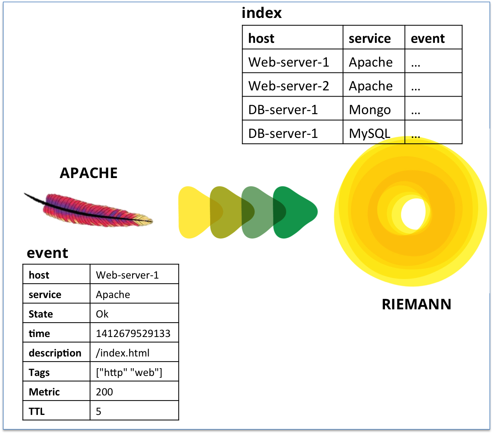

Riemann
http://aphyr.github.io/riemann/
@andee_marks
Definition
A network event stream processing system
Background
Objective
Scratch the surface
Key Concepts
Anatomy of an Event
(Arbitrary custom event fields also supported)
(defstruct event
:host "web-server-4"
:service "apache"
:state "ok"
:time 1412679529133
:description "/index.html"
:tags ["http" "web"]
:metric 200
:ttl 5)
Demo Time!
Event Generation
(for /Users/amarks/Code/riemann/index.html)
(defstruct event
:host "localhost" ; static
:service "file-size" ; static
:state "file" ; or "dir"
:time 1412679529133 ; m/s since epoch
:description "index.html"
:tags ["riemann" "Code" "amarks" "Users"] ; reverse order
:metric 7766 ; must be numeric
:ttl 5)
Stream filtering (1/5)
(streams
(where (and (service "file-size")
(not (tagged ".git")))
(fn [e] (prn (:state e)
(:metric e)
(:extension e)
(:tags e)
(:description e)))))
Stream splitting by state (2/5)

Event injection (3/5)
(streams
(where (and (service "file-size")
(state "file")
(> metric 6000))
(with :service "big-file" index)
(else
(with :service "small-file" index))))
Aggregation - percentiles (4/5)
(streams
(where (service "small-file")
(percentiles 5 [0.25 0.50 0.75]
(scale (/ 1 1024)
index))
index))
Aggregation - rate (5/5)
(streams
(where (service "file-size")
(with :metric 1
(rate 5
(adjust [:service str " rate"] index)))))
Rolling, Throttling, Emailing
(lot of other examples at http://riemann.io/howto.html)
(def tell-ops (throttle 5 3600 (email "fab@ioof.com.au")))
(streams
(where (state "error") tell-ops)
(tagged "exception" tell-ops))
Event Source Support
- Cassandra, Chef, Collectd
- Ganglia, Graphite
- HBase, Himpy
- JMX, JVM Profiling
- Kiries
- Logstash
- Monitorlib, Mysql
- Puppet
- Syslog
More?
- http://player.vimeo.com/video/67181466
Thanks
@andee_marks